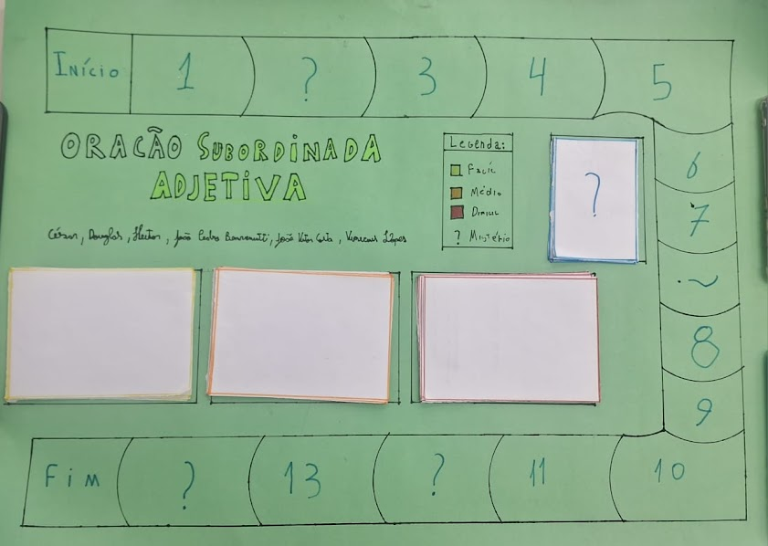

LINGUAGENS
ATIVIDADE 1:
TEXTO DISSERTATIVO
O primeiro passso para iniciar esta atividade de Texto dissertativo/Plano de texto (conteudo na qual estavamos aprendendo), seriam formar duplas o trios, e após isso cada grupo devia pesquisar e escolher um tema que considerasse relevantes para a produção de um plano de texto, devendo conter os seguintes tópicos: Contextualização, Tese e justificativa da tese, Argumento 1, Argumento 2 e Proposta da intervenção. Após isso a entrega deveria ser através do classsroom, e com o resultado do grande esforço realizado por mim e minha dupla, conseguimos alcançar o tão esperado A.
ATIVIDADE 2:
JOGO ORAÇÕES SUBORDINADAS

O primeiro passso para iniciar esta atividade dos Jogos das Orações Subordinadas (conteudo na qual estavamos aprendendo), seriam formar gurpo de no maximo 5 pessoas, e após isso cada grupo receberia um dos tipos de orações subordinadas (substantivas, adjetivas ou adverbiais), e após isso ganhavamos cartolinas para a criação de um jogo sobre o tipo de oração subordinada que foi sorteado, e lembrando de conter um manual de instruções com as orientações do jogo.Após isso a entrega deveria ser através do classsroom, e com o resultado do grande esforço realizado por mim e meu grupo, conseguimos alcançar o tão esperado A.